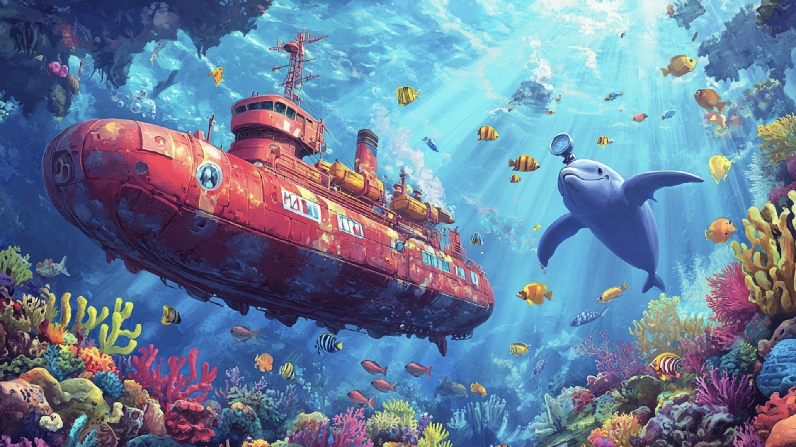
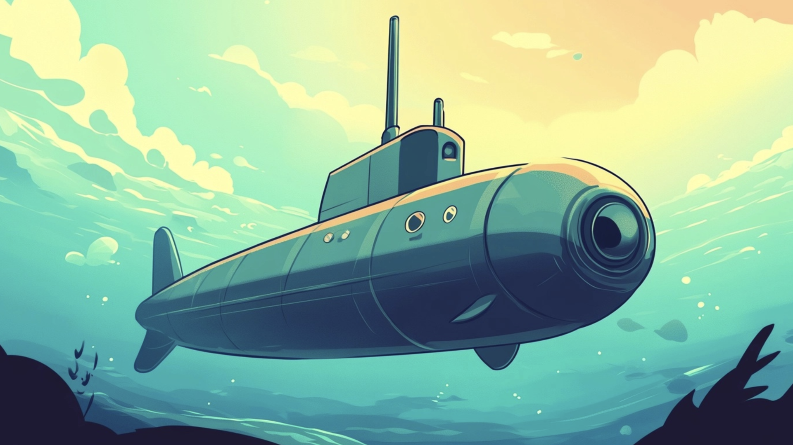

Byla jednou jedna veselá nákladní loď jménem Anička. Anička byla velká a červená loď, plná kontejnerů v modré, zelené a oranžové barvě, které se blyštěly na slunci, když plula po širokém oceánu. Anička milovala volnost na otevřeném moři a její vysoká příď silně a přesně rozrážela vlny. Byla vybavená moderními technologiemi – anténami, radary a vysokými stožáry, které se hrdě tyčily proti obloze.
Jednoho krásného dne, když Anička zrovna obdivovala nebe plné růžových a zlatých mraků, zaslechla bublání z moře. Zevnitř vody se vynořila malá, elegantní ponorka jménem Pepa, jejíž tmavá válcovitá forma kontrastovala s rozlehlou Aničkou.
„Nazdar, Aničko!“ zasmála se Ponorka Pepa.
„Ahoj Pepo!“ odpověděla Anička, „Co tě přivádí na hladinu?“
Pepa se rozhlédla a zasnila. „Víš, vždycky jsem přemýšlela, jaké to je vidět svět z tvé perspektivy, z vrchu oceánu. Přece jen, celý svůj život trávím pod vodou.“
Anička se usmála. „No, to je zajímavé, protože já jsem se vždycky chtěla podívat pod hladinu!“
Pepa se zamyslela a pak jí bliklo světélko v periskopu. „A co kdybychom si vyměnily role na jeden den? Já se pokusím plout na hladině jako ty, a ty se potopíš pod hladinu a uvidíš svět mýma očima!“
Pepa se rychle ponořila zpět pod hladinu a po chvíli se vynořila s něčím podivným na zádech. Byl to starý zrezivělý zvon, který našla na dně oceánu. „Tohle bude můj plovák,“ zasmála se. „Když se připevním k tomuhle, udržím se na hladině jako loď!“
Anička se zasmála. „Dobrá tedy! A já si zkusím potápění. Ale budu potřebovat nějakou pomoc, Pepo.“
Pepa přikývla. „Neboj se, znám skvělou partu chobotnic, které ti udělají skvělou ponorku z pár starých lodních součástek. A navíc, znají všechny tajné kouty pod vodou!“
Za pár hodin už byla Anička připravená na své první ponoření. Chobotnice jí připevnily ke trupu zvláštní ploutve a přidaly periskop, který vyrobily z rozbité staré trubky. Anička byla trochu nervózní, ale také nadšená.
„Tak jdeme na to!“ zvolala Anička a pomalu se začala potápět pod hladinu. Nejprve se jí zalíbilo, jak vypadá svět pod vodou – hejna pestrobarevných ryb, korálové útesy plné života, a dokonce potkala veselou želvu jménem Žofka, která jí ukázala svůj domov ve skalní jeskyni.
Zatímco Anička objevovala podmořský svět, Pepa se na hladině houpala na svém zvonu, ale brzy zjistila, že to není tak jednoduché, jak si představovala. Vítr jí rozhoupal, zvon hlasitě cinkal a rackové si z ní dělali legraci, jak neohrabaně pluje. „Tohle bude těžší, než jsem si myslela!“ smála se Pepa, zatímco se snažila udržet stabilitu na vlnách.

Ale jak den pokračoval, obě si na své nové role zvykly. Anička byla nadšená ze všeho, co pod hladinou viděla, a Pepa si zase užívala ten nádherný pocit slunce na hladině. Obě si uvědomily, jak je svět toho druhého zajímavý, ale také těžký.
K večeru se setkaly zpátky na hladině.
„Tak co, jaké to bylo?“ zeptala se Pepa, když se Anička vynořila s nadšením ve všech plachtách.
„Bylo to úžasné!“ odpověděla Anička. „Viděla jsem věci, o kterých jsem si nikdy nemyslela, že existují. Ale přece jen, já patřím na hladinu.“
„A já zase pod ni,“ zasmála se Pepa. „Plavání na hladině je pro mě trochu moc. Myslím, že radši zůstanu tam dole.“
Obě se smály a rozhodly se, že příště zůstanou každá ve své roli, ale budou si navzájem vyprávět o svých dobrodružstvích. A tak se Pepa vrátila pod hladinu a Anička dál brázdila široké oceány, ale tentokrát s novým pochopením toho, jak různorodý a krásný svět opravdu je.
Někdy je skvělé vyzkoušet něco nového, ale nakonec zjistíme, že nejlepší je být sám sebou a dělat to, co nám jde nejlépe.
Jak funguje ponorka:
Ponorka je speciální plavidlo, které se dokáže pohybovat pod hladinou vody i na jejím povrchu. Její schopnost ponořit se pod hladinu závisí na balastních nádržích. Tyto nádrže mohou být naplněny buď vzduchem, nebo vodou. Když se ponorka chce potopit, napustí do nádrží vodu, což zvýší její hmotnost a způsobí, že klesá pod hladinu. Když se chce vynořit, voda z nádrží je vytlačena ven a nahrazena vzduchem, což způsobí, že ponorka stoupá zpět k hladině.
Ponorky mají také periskop, který umožňuje posádce vidět, co se děje nad hladinou, když jsou pod vodou. Dnešní moderní ponorky používají také sonar, což je zařízení, které jim umožňuje „vidět“ pomocí zvukových vln, i když jsou v hlubokých a temných částech oceánu.
